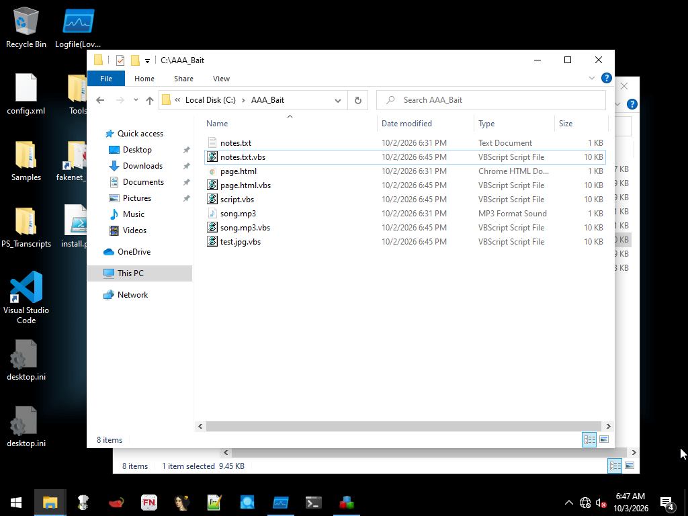
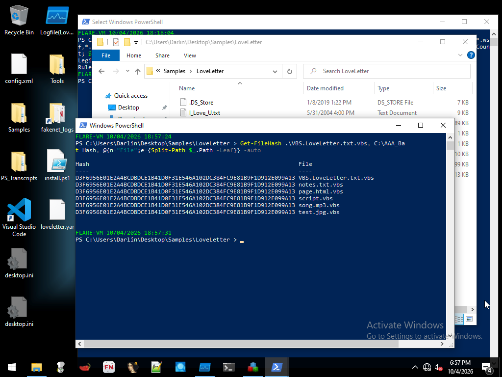
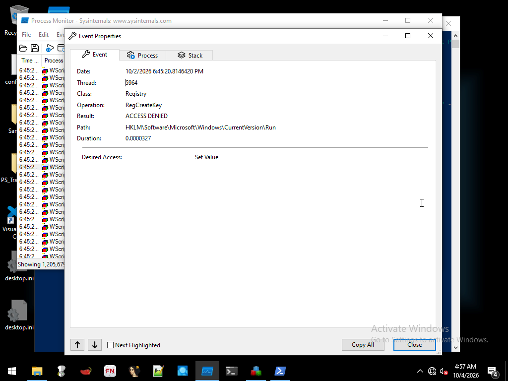
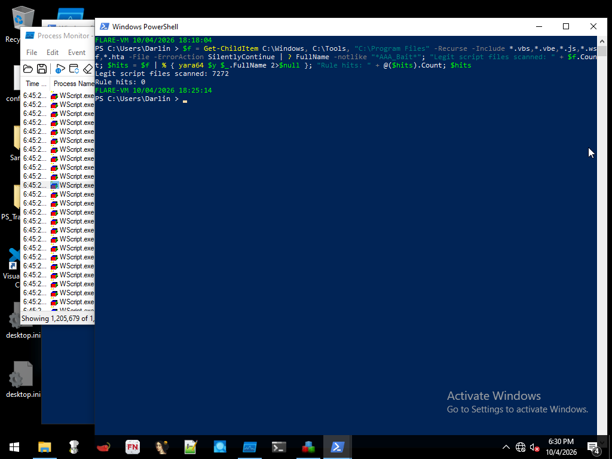

VBS.LoveLetter – Polish "RACHUNEK" Variant
Static and dynamic analysis of a copycat variant of the 2000 "ILOVEYOU" worm in an isolated FLARE-VM + REMnux lab, ending in a tested two-tier YARA detection.
Key Findings
- Not the original worm. Static analysis showed a Polish copycat: the email lure was renamed to "RACHUNEK" (Polish for "bill/invoice"), self-copies were renamed, and the original's password-stealer download was removed.
- Expanded target list. Unlike the 2000 original, this variant also infects
.txtand.htmlfiles, hiding the victim's original and planting a.vbscopy beside it. - Least privilege defeated persistence. Run as a standard user with UAC on, every self-copy into Windows folders and the HKLM Run key write failed with ACCESS DENIED. The worm could not survive a reboot.
- Failures were invisible.
On Error Resume Nexthid ~45 failed writes from the user. Process Monitor recorded every one. - Detection. A two-tier YARA rule matched 6/6 copies of the worm with 0 false positives across 7,272 legitimate scripts.
Sample
| File | VBS.LoveLetter.txt.vbs (9,686 bytes) |
|---|---|
| SHA256 | D3F6956E01E2A4BCDBDCE1B41D0F31E546A102DC384FC9E81B9F1D912E099A13 |
| Type | VBScript mass-mailing worm |
| VirusTotal | 49/61 detections |
| Source | theZoo |
Static Analysis
I read the full source before running anything, then wrote down predictions for a standard-user run. The worm's main routine runs in this order:
Copies itself into Windows folders as MSKernel.vbs and WinDLL.vbs, names chosen to blend in with system files.
Writes HKLM Run / RunServices autostart entries and hijacks the Internet Explorer start page.
Mails itself as RACHUNK.TXT.vbs to every Outlook contact. With extensions hidden, it displays as RACHUNK.TXT.
Crawls every drive and replaces or shadows files by extension with copies of itself.
Dynamic Analysis
Procmon filtered to wscript.exe, Regshot before/after, and a bait folder of .jpg, .mp3, .js, .txt and .html files. The first run captured 22M+ Procmon events and exhausted the VM's memory, so I reverted, dropped filtered events, and renamed the bait folder so the crawl reached it first. On the second run the bait was infected within seconds.

.vbs copies planted beside hidden originals.
Persistence vs. Least Privilege
| Target | Result |
|---|---|
C:\Windows\System32\MSKernel.vbs | ACCESS DENIED (~15 retries) |
C:\Windows\WinDLL.vbs | ACCESS DENIED (~15 retries) |
C:\Windows\System32\RACHUNK.TXT.vbs | ACCESS DENIED |
HKLM\...\CurrentVersion\Run | ACCESS DENIED |
HKCU\...\Internet Explorer\Main\Start Page | Succeeded: www[.]plusgsm[.]pl |

Only the per-user browser change succeeded. With no self-copy and no Run key, the worm cannot relaunch after a reboot.
Predictions vs. Results
| Prediction (standard user, UAC on) | Result |
|---|---|
| Self-copies to Windows folders fail | Correct |
| HKLM Run key fails | Correct |
| IE Start Page (HKCU) succeeds | Correct |
| No visible errors | Correct |
.jpg, .mp3, .js bait infected | Correct |
.txt and .html bait untouched | Wrong: this variant targets them too |
The missed predictions led to the most significant finding: the variant's author expanded the original target list.
MITRE ATT&CK
Detection: YARA
Two tiers: a high-confidence alerting rule for this variant (a family routine name plus two variant-only file names) and a broad hunting rule for the LoveLetter family. I avoided generic VBScript constructs like On Error Resume Next that also appear in legitimate scripts.
rule VBS_LoveLetter_PL_Variant
{
strings:
$fam1 = "spreadtoemail" nocase
$fam2 = "infectfiles" nocase
$var1 = "MSKernel.vbs" nocase
$var2 = "WinDLL.vbs" nocase
$var3 = "RACHUNK.TXT.vbs" nocase
$var4 = "RACHUNEK.HTM" nocase
condition:
1 of ($fam*) and 2 of ($var*)
}| Test | Result |
|---|---|
| Original sample + 5 infected copies | 6/6 matched |
7,272 legitimate .vbs, .vbe, .js, .wsf, .hta files | 0 false positives |

Lessons Learned
- Least privilege works. A standard account with UAC stopped this worm's persistence entirely.
- Logs over the screen. The user saw nothing; Procmon showed ~45 blocked writes.
- Predict first. Writing predictions before detonation turned two wrong guesses into the key finding.
- Configure tools before detonating. Unfiltered Procmon crashed the first run, and a default Regshot setting missed the bait folder.
- IOCs need judgment. Hashes follow content, not file names, and legitimate domains are context, not block-list entries.